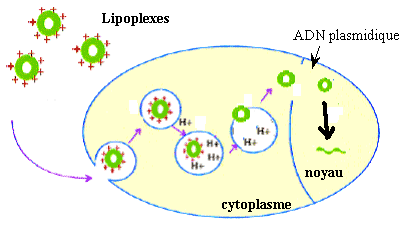
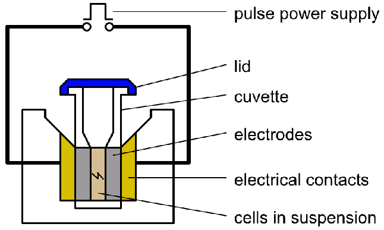
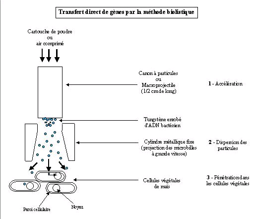
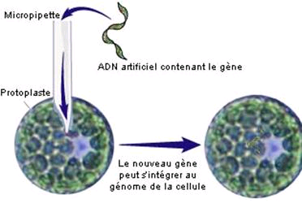
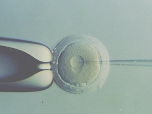

Introduction
Le génie génétique correspond à l’ensemble
des techniques qui permettent de manipuler le génome
des être vivants et des virus en procédant in vitro ;
Cela rend possible de modifier le génome d’un être vivant (ou d’un
virus) en y introduisant un ou plusieurs éléments génétiques provenant
d’une autre unité biologique (cf. exemples)
Le clonage est la technique de base du génie génétique
.
Définition du clonage : amplification d'une
séquence d'acide nucléique (l'insert) provenant
d'un organisme donneur dans un autre organisme hôte
(receveur) par obtention (et amplification) d'un clone
cellulaire de l'hôte. Le transfert du matériel génétique passe
obligatoirement par une ou plusieurs étapes de manipulations in
vitro (ex vivo).
Les grandes étapes du clonage vont servir de fil conducteur à ce
cours :
- Préparation de l'ADN insert (à cloner).
quatre origines possibles :
- A.D.N.c (c pour complémentaire) de l'ARNm ;
- ADN amplifié par PCR ;
- d’origine naturelle (après purification) ;
- synthétique.
Cet ADN à cloner, est digéré par une ou deux enzymes de restriction
ou bien contient à ses extrémités des séquences connues qui serviront
dans un processus semblable à la recombinaison homologue avec des
séquences identiques (homologues) dans le site de clonage du vecteur
choisi.
- En parallèle, il faut choisir (les outils adaptés au but recherché)
et préparer (produire, purifier) le vecteur de clonage :
- plasmide
- phage et virus eucaryotes ;
- phagémide (plasmide chimère possédant un élément phagique) ;
- chromosome artificiel (bactérien ou eucaryote).
Ce vecteur est digéré par une ou deux enzymes de restriction
compatibles avec celles utilisées sur l’insert ou bien possède dans son
site de clonage deux séquences homologues à celles qui flanquent
l'insert à cloner par recombinaison.
- Ligation de l'insert dans le vecteur de clonage :
bouts francs, préparation de bouts collants, polarité de l'insert,
déphosphorylation, tailing, … ou bien recombinaison (système GateAway,
In-fusion, réaction de Gibs …).
- Transformation / transfection : utilisation de
techniques physico chimiques (CaCl2 + froid + choc thermique, HPO
4Ca,
polycation), électroporation (schéma), lipofection sur cellules sans
paroi, projection de particules metalliques chargées d'ADN vecteur
(biolistique), injection directe dans l'ovocyte (animaux transgéniques),
utilisation d'un virus modifié, etc. …
- Mise en culture pour sélection des clones transformés/
transfectés et recombinants (marqueurs de transformation/
transfection, de recombinaison).
- Utilisation de la séquence clonée : séquençage, mutagenèse dirigée
(utilisation de la PCR et des endonucléases à façon), production de
protéines, détection d'exon, knock-out (et Kin) de gène, insertion
dans un génome par recombinaison (transgénèse, thérapie génique),
&hellip ;
transformation ou transfection
En génie génétique la transfection (terme
générique) désigne toutes les opérations permettant de faire
pénétrer une molécule d'ADN dans une cellule pour laquelle il est
étranger (d'une autre origine). La transfection peut utiliser des
moyens naturels (transformation, transduction
[injection par un système viral], conjugaison
, Agrobacterium tumefaciens [pour les
plantes uniquement]) ou artificiels (bombardement, électroporation,
liposomes, molécules chimiques transporteuses, ...).
L'ADN étranger peut exprimer ou non (on peut cloner des séquences qui
ne sont pas des gènes) des gènes qu'il contient de manière
constitutive (AMPR par exemple, c'est rarement le cas) ou
régulée (sous la dépendance de facteurs d’induction
contrôlée : [I.P.T.G. ; métabolite]). Cet ADN est
souvent associé à une molécule d'ADN porteuse (le vecteur
de clonage) qui lui confère certaines propriétés (
stabilité : réplication autonome ; sélectivité : présence d'au
moins un marqueur de sélection [résistance à l'ampicilline];
manipulable au moyens de sites uniques de restriction).
Un organisme génétiquement modifié sera créé dès qu'il aura reçu un
ADN codant ou non qui n'a encore jamais existé dans son espèce, ou
bien lorsque l’on aura utilisé une technique artificielle pour le
transfecter. Tous les O.G.M.
doivent être
déclarés aux autorités compétentes (commission de génie génétique)
et faire l'objet d'un confinement approprié pour éviter leur
dissémination dans l'environnement. Son A.D.N. doit être détruit
avant rejet des déchets dans l’environnement.
Méthode physico-chimiques
Méthodes chimiques
Méthodes au chlorure de calcium et choc thermique
CaCl2 et choc thermique sur cellules
compétantes
Cette méthode est la plus ancienne, et est toujours employée pour les
bactéries de type Gram- (E. coli).
Avant sa transformation la bactérie est rendue compétente
; c'est à dire que l'on s'assure que son état physiologique garantira
une efficacité maximale de transformation (
exprimée en nombre
d'U.F.C. par µg d'ADN transformant). Pour cela il faudra obtenir
des cellules venant de se diviser plusieurs fois au cours de la
phase exponentielle de croissance : à ce moment les
membranes sont étirées au maximum et la paroi cellulaire est plus
perméable (un vieille paroi est plus réticulée, plus consolidée),
d'autre part la cellule est dans un état énergétique lui permettant
de résister au mieux aux traitements traumatisants de la
transformation. Pour compléter le traitement, les cellules
compétentes refroidies sont mises en contact d'une solution
concentrée de chlorure de calcium.
Le calcium chélate les phospholipides des membranes et
participe à la rigidification des membranes à
froid. De plus le calcium neutralise l'ADN transformant
et lui permet de sédimenter au contact de la membrane avant
sa pénétration.
Techniquement il est très important d’utiliser du matériel refroidi
pour éviter tout choc thermique prématuré.
La pénétration de l'ADN transformant se fait au cours du choc
thermique qui crée des pores dans les membranes qui laisse
entrer l'ADN, mais également laisse sortir des nutriments vitaux.
La mortalité des cellules est très importante lors du choc thermique.
En résumé cette transformation qui utilise des cellules rendues
compétentes consiste en deux étapes :
- la neutralisation des charges de l'ADN par complexation
avec des cations divalents (Ca2+ ou Mg2+), précipitation sur
les membranes ;
- choc thermique créant des trous par lesquels l'ADN pénètre
(cf. TP)
Remarque : L'efficacité de transfection est
très faible
(de 105 à 108 bactéries transformées [UFC] par microgramme d'A.D.N.,
soit moins d’une molécule efficace sur plus d’un million). Le calcul
de ce rendement se fait en déterminant combien d’UFC on obtiendrait
en étalant la totalité des cellules ayant subi le choc thermique et
en divisant ce nombre par la quantité d’ADN utilisée exprimée en µg.
Par exemple : à 200 µL de cellules compétentes est ajouté 2
µl d’ADN à 0,5 ng/µL. Après 45 minutes de sédimentation et le choc
thermique sont ajoutés 1,8 mL de milieu riche. Après étalement de
50 µL de cette suspension on dénombre au bout de 18 heures 569 UFC
(il n’y a pas de norme N < 300).
Raisonnement : 1 ng d’ADN à permis d’obtenir une suspension
de 2 mL, 50 µL donne 569 UFC, 2 mL aurait donné 40 fois plus, soit
22360 UFC. L’efficacité est donc de E = 22360 / 1.10-3 2,2.107
UFC/µg
Transfection des cellules eucaryotes sans paroi par le phosphate
de calcium
transfection cellules sans paroi
Les cellules animales adhérentes et les protoplastes peuvent être
transformé par la précipitation sur les tapis cellulaires d’
agrégats de phosphate de calcium complexé
avec l’ADN transgénique.
L’ADN est ajouté à une solution de phosphate de calcium, puis
homogénéisé en créant un courant ascensionnel dans le tube provoqué
par l’envoi de bulles stériles dans le tube. Lorsque l’on peut
observer la formation de petits agrégats (cristaux) dans le tube,
la suspension de cristaux est disséminée sur le tapis de cellule en
culture (une goutte par ci, une par là).
Le phénomène de transport intracellulaire du complexe ADN/phosphate/
Calcium n’est pas compris, mais se fait sans choc thermique
endocytose ?).
Association à des liposomes cationiques artificiels, à
la transferrine, à des polycations : internalisation (uniquement
pour les cellules à membrane nue)
liposomes
Des polymères cationiques peuvent servir à neutraliser
l'ADN et à le complexer en gros agrégats. Cela peut lui permettre
de traverser aisément la membrane plasmique des cellules sans paroi.
La technique la plus répandue est celle qui utilise les liposomes
cationiques formés d’une substance de type lipidique dont la partie
hydrophile est cationique (ammonium quaternaire).
Ces molécules forment des liposomes (vésicules à double couche) qui
neutralisent et cotransportent le vecteur à travers la membrane
plasmique. Le phénomène de libération de l’ADN est mal connu.

Méthodes physiques
Électroporation (en remplacement du choc thermique et polyvalent
)
Électroporation
Définition de l'électroporation

Définition : Cette méthode utilise une machine
(électroporateur) capable de créer un instant très
bref un champs électrique de tension élevée
(réglable) qui provoque la formation fugace de trous dans les membranes
phospholipidiques (anions).
L'ADN en solution peut alors rentrer
dans le cytoplasme.
Mise en oeuvre technologique
L'ADN à transfecter est mis en solution dans de l’eau très pure ou
fortement désionisée (sinon un arc électrique peut se déclencher). Pour
maintenir la solution isotonique, les sels doivent être remplacés
dans le tampon de suspension cellulaire par des solutés non chargés
comme le glucose par exemple ; pour cela les cellules peuvent être
centrifugées plusieurs fois en ajoutant du tampon de suspension
afin de les laver (diluer les sels).
Le courant électrique ne peut passer que par les membranes cellulaires
chargées, ce qui crée les ouvertures.
L'efficacité de transfection est améliorée par rapport
aux méthodes utilisant le choc thermique.
Projection de l'ADN associé à des particules solides : Biolistique
Biolistique

Les cellules des plantes sont entourées d'une paroi très difficile à
éliminer. Pour transformer des cellules végétales sans supprimer la
paroi on utilise des canons projetant des particules métalliques
d'or ou de tungstène sur lesquelles sont adsorbés
les vecteurs de clonage : cette méthode est appelée
Biolistique.
Cette technique peut également être employée pour transfecter des
cellules animales in situ, c’est à dire dans des tissus épais.
Méthode biologiques
Transformation des cellules bactéries GRAM+ et certaines Gram-
Transformation des bactéries Gram+
La transformation de Bacillus subtilis Gram + (domaine
industriel)
se fait naturellement grâce à l'existence d'un système de transport
membranaire d'ADN étranger (le
transformasome) situé
au niveau de la membrane plasmique. Il suffit donc de mettre en contact
une culture de ces bactéries avec le vecteur recombiné pour obtenir des
bactéries transformées. Ces bactéries sont très faciles à transformer et
sont
souvent capables d’excréter les protéines transgéniques pourvu que
leur gène soit fusionné (en phase) avec une séquence codant pour
une sorte de peptide signal.
Utilisation des virus adaptés au clonage
vecteurs viraux
Les virus possèdent des outils moléculaires très efficaces
pour injecter leur génome dans les cellules parasitées,
ces systèmes peuvent être mis à profit pour s'assurer
d'un excellent taux de transfection.
Le seul paramètre à régler est la multiplicité
d'infection.
Les rétro-virus (ou lentivirus) sont utilisés pour stabiliser le
transgène car ils s’intègrent au génome mais à un endroit non défini
à l’avance (c’est très risqué!).
Injection dans les grosses cellules
injection
Injection dans les cellules végétales

L’injection d’ADN dans les grandes cellules eucaryotes réussi
d’autant mieux que l’ADN est linéaire et en concentration assez élevé.
En effet, les molécules circulaires sont éliminées par le système de
défense antiviral, et l’ADN doit être intégré au génome par recombinaison
(hétérologue) pour se stabiliser, ce phénomène étant très rare, il faut
injecter de nombreuses molécules pour espérer qu’au moins une soit
intégrée. Référence
Injection dans les ovocytes

L'A.D.N. (sous forme de nombreuses molécules de vecteurs recombinés)
peut être directement injecté par micromanipulation dans le
pronucleus mâle (c’est le plus gros des deux pronucléi)
d'un œuf fécondé.
La recombinaison hétérologue (au hasard dans un ou
plusieurs chromosomes) n’est pas contrôlée. Le taux de réussite est
faible et aléatoire (quelques pourcent d’embryons transgéniques).
Dans l’image ci-contre on distingue bien les deux pronucléi.
Technique : des ovules sont prélevés sur un animal stimulé
hormonalement. La fécondation est réalisée in vitro pour contrôler
la maturation des œufs. Les œufs sont maintenus par une
pipette de contention (à gauche sur l’image) par effet
de ventouse sur la membrane pellucide.
L’injection se fait en perçant la membrane pellucide à l’aide
d’une aiguille de verre creuse obtenue par étirement
à chaud (par une machine).
N.B : si l'œuf est énucléé, l'injection d'un noyau de cellule
somatique permet de réaliser un clonage.